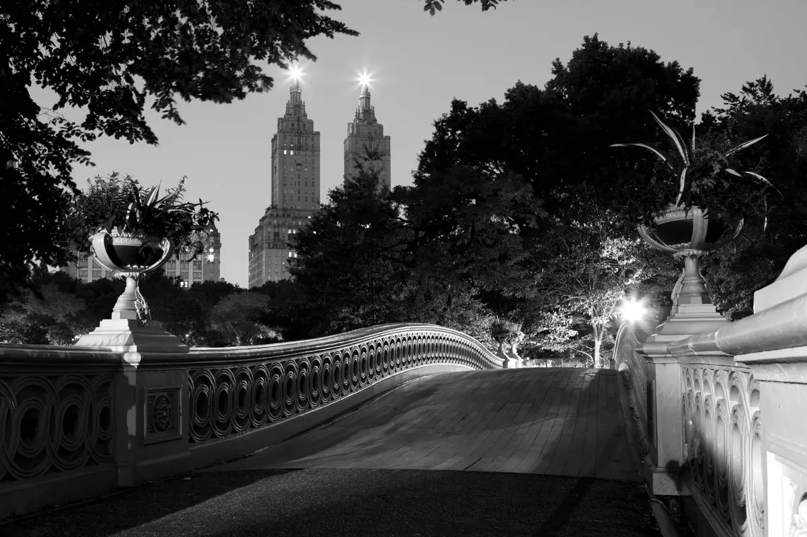
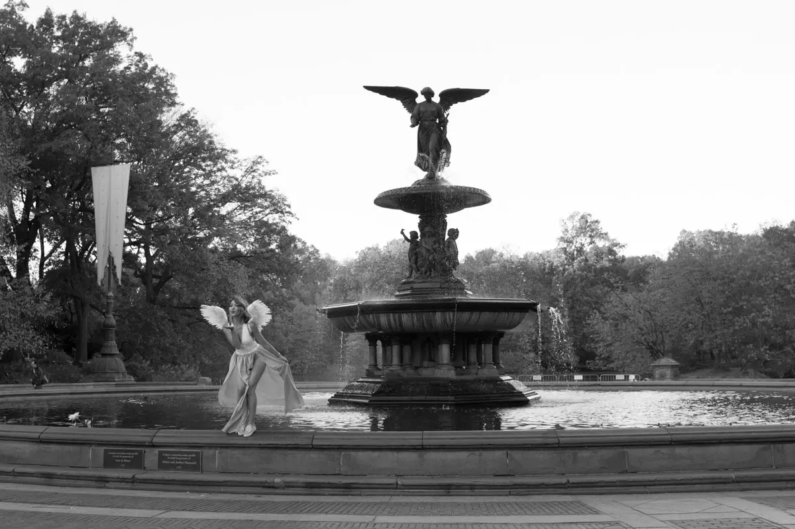

── .✦ Top Quality
Presenting only the best quality photography.

── .✦ Unique Shots
Snapping pictures of special aspects hidden away from the world.

── .✦ Creative Glow
A sprinkle of creativity and a shot of love in every photo.